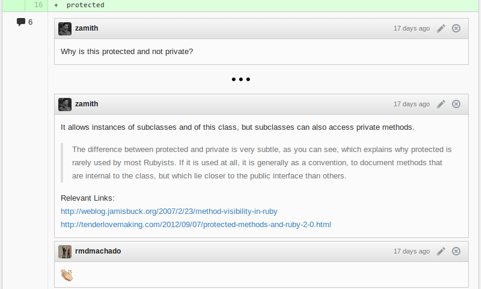
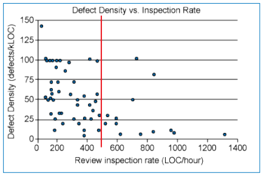

The Code
Review Show
with Miguel Palhas
mpalhas@gmail.com @naps62
mpalhas@gmail.com @naps62
Workflow (the GB way)
- Create feature branch (based on dev)
- Work
- Pull Request
- Wait for code review
- Discuss & fix accordingly
- Squash/Merge when approved (by review & CI)


The Code Review
Having your code reviewed by someone else before merge/deploy
Pros:
- Better code quality
- Better learning process
- Team communication
Guidelines (by thoughtbot)
As a Reviewer:
- Identify ways to refactor/simplify the code
- Try to understand the author's perspective
- Sign off the pull request (thumbs up or comment)
As a Reviewee:
- Don't take it personally
- Explain stuff
- Refactor code that seems unclear
- Comment and push based on feedback
Guidelines (by thoughbot)
Do...
- Be humble
- Accept that some things are opinions
- Discuss anything. Even if it doesn't seem important
Don't...
- Use offensive words: "This code is stupid"
- Make demands: "Change to X" vs "How about X?"
- Be sarcastic
- Have long online discussions. Do it in person!
Guidelines (by Smartbear)
- Review fewer than 200-400 lines of code at a time
- Take your time, but no more than 60-90 minutes
- Verify that defects are actually fixed!
- Finding defects should be viewed positively
- Capture metrics to improve your process
Its Educational
Metrics
-
Inspection Rate
How fast are you? (#kLOC / hour) -
Defect Rate
How fast do you find defects? (#Defects / hour) -
Defect Density
#Defects / #kLOC
